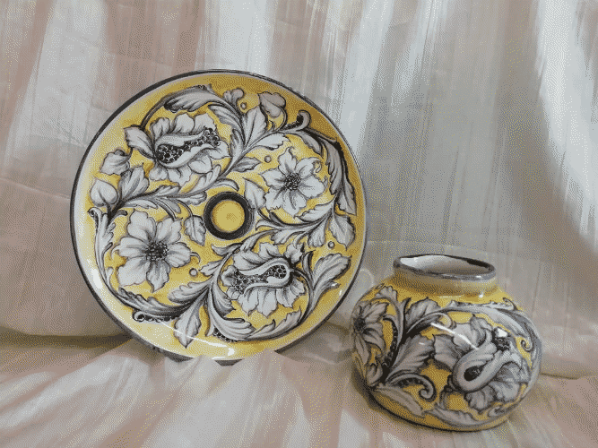
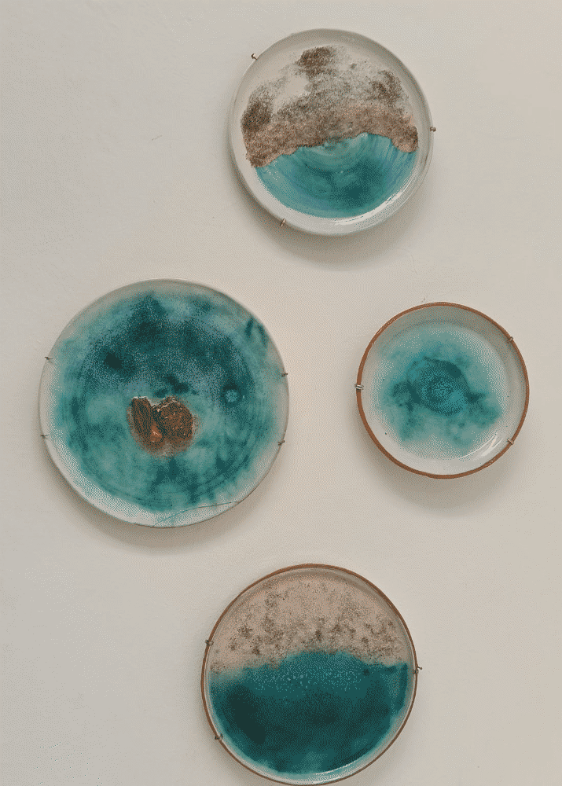
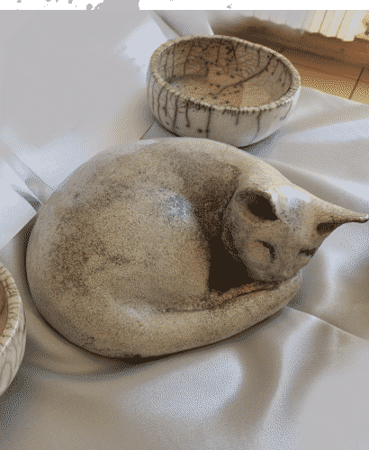
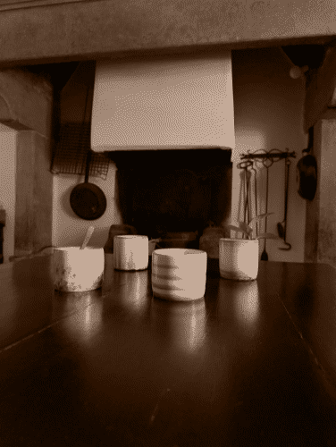
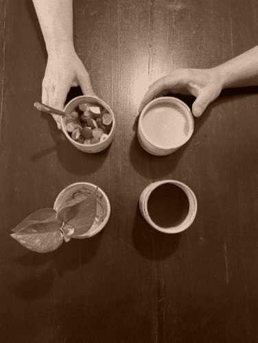
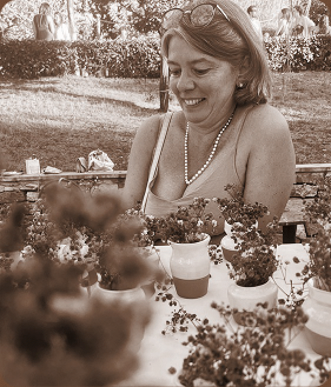

Angela Tosi realizza maioliche, sperimenta tecnica Raku e autoproduce smalti a basse temperature, proponendo laboratori di ceramica creativa.

L'argilla rossa, lavorata fin dai tempi del liceo artistico, è un materiale irrinunciabile. Lo smalto bianco (e la pittura soprasmalto) rende le sue ceramiche impermeabili e utilizzabili quotidianamente. L'oggetto è ideato in maniera unitaria, partendo dalla creazione al tornio e scegliendo la decorazione in modo che essa accompagni e valorizzi la forma. Partendo dalla tecnica tradizionale (a cui ritorna sempre volentieri), ha sviluppato decori originali e uno stile essenziale.

Utilizzando terre refrattarie, engobbi e cristalline, sperimenta la tecnica raku, amata soprattutto per il contatto diretto col fuoco, e gli effetti metallici e craquelé.
Sperimenta terre e materie prime naturali per la realizzazione di smalti autoprodotti, ostinandosi a utilizzare le basse temperature (950 gradi) per motivi di sostenibilità energetica ed ecologica.

Laboratorio di ceramica per bambini e adulti. Mette a disposizione materiali e competenze in modo che ogni allievo sia seguito individualmente per lo sviluppo del proprio lavoro, che deve rispecchiare, prima di tutto, la personalità creativa di chi lo realizza.


Gli oggetti sono realizzati in maiolica e rispondono alla ricerca di essenzialità, praticità, ecosostenibilità e risparmio energetico.
L'idea è di abbandonare la proliferazione di oggetti che soffocano la nostra vita e le nostre case, per riscoprire la libertà di utilizzare un solo oggetto come bicchiere, come tazza e come coppetta (per gelato, macedonia, porridge ecc.).
L'essenzialità è sottolineata dalla semplice forma cilindrica e dalla decorazione (con ramina, data a pennellate libere). La decorazione differenzia i vari elementi della serie, per permettere di assegnare ad ogni membro della comunità familiare un oggetto, con risparmio di acqua e saponi per il lavaggio senza dover rinunciare all'igiene.
La scelta della maiolica risponde anch'essa a un'esigenza di prossimità ed ecosostenibilità: l'argilla rossa è la “nostra” terra toscana, a Km0. Lo smalto bianco è tipico della maiolica italiana, assicura impermeabilità, durabilità nel tempo e, resistendo anche in lavastoviglie, è pratico: essenzialità ed ecosostenibilità si estendono alla vita quotidiana, accompagnata da oggetti che semplifichino la vita, pur rimanendo attenti alle caratteristiche estetiche. Per questo non rinuncia alla foggiatura al tornio che, pur utilizzando energia elettrica, assicura una forma pulita e coerente. La maiolica, cuocendo a 980/950 gradi (e non a 1250) permette in ogni caso di bilanciare qualità estetica e risparmio energetico.

Bio
Nasce a Firenze nel 1974 e studia arte presso il Liceo Artistico Firenze 1 di Via Cavour con insegnanti quali la scultrice Amalia Ciardi Dupré e lo scultore Silvano Porcinai, e il pittore Francesco Inverni.
Durante l'anno integrativo post diploma, inizia lo studio del tornio presso il Conventino.
Si iscrive a Storia dell'Arte presso l'Università di Firenze e otterrà la laurea in Storia e Tutela dei Beni artistici nel 2005, con la valutazione di 108/110 in Storia della Miniatura e delle Arti Minori.
Riprende lo studio della ceramica con assiduità dal 2013 presso Associazione Ceramiche a Montughi, specializzandosi nella maiolica foggiata al tornio e decorata soprasmalto.
Nel 2020 entra nel laboratorio della ceramista Lisbeth Dali, ceramista svizzera, operante in Italia da oltre quarant'anni, attraverso la quale sperimenta il gres e l'alta temperatura, approfondisce lo studio del tornio, impara la tecnica raku con engobbi, su ciotole e su scultura. Inizia con lei la sperimentazione di smalti propri, partendo da materie prime naturali, ma per basse temperature.
Nel 2021 apre un proprio laboratorio presso Associazione 9 Muse di Bivigliano (FI) dove tiene corsi di ceramica per bambini, insegnando la maiolica.
Nel 2023 sposta il laboratorio presso il Circolo La Famiglia di Bivigliano (FI) e insegna in corsi, ormai ben avviati, a bambini ed adulti.
La sua ricerca, pur spaziando in vari ambiti della ceramica, si focalizza sulle possibilità creative della contaminazione tra tecniche ceramiche diverse, optando per la bassa temperatura e la maiolica (tecnica “a Km0”), con contaminazioni di engobbi, terre refrattarie, smalti sviluppati autonomamente e combinati anche con elementi tratti direttamente dalla natura.